point-light-reflection
The classic class scene through the BVH: point lights (single analytic shadow ray each), Lambertian shading, Phong highlights, hard shadows, and mirror reflection on the center sphere.
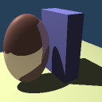
matrix-ellipsoid
Affine-transformed primitives: a sphere carrying a 3x4 matrix becomes an ellipsoid; exercises the transform/inverse-ray path in the aggregates.
area-light-soft
Auto-detected area light (an emissive sphere): Monte-Carlo soft shadows with the 2x2 stratified sample grid, seeded so the noise is reproducible.
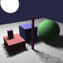
area-light-1samp
Same area light with a single shadow sample per shading point: hard-edged but randomly jittered shadows -- the noisiest configuration.
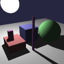
point-path-forced
shadow_samples=0 forces the analytic point-light path even for area lights (the light's center is used): crisp shadows, no noise.
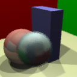
dof
Thin-lens depth of field, activated automatically by the lens in the scene file: 2x2 seeded aperture-disk samples per AA sample.
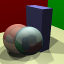
dof-off
The same lens scene with dof_samples=0: the lens is ignored and everything renders pin-sharp.
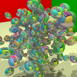
reflection-room
Mirror reflection at depth: ~200 reflective ellipsoids in a colored room, 8 bounces, traced through the BVH.
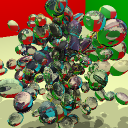
refraction-room
Snell-law refraction with total internal reflection: the same room with refractivity-0.70 glass ellipsoids.
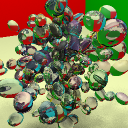
transparent-shadows
Opt-in transparent shadows: shadow rays accumulate transmittance through the glass ellipsoids, so glass casts lighter shadows (also exercises the area-light path, shadow_samples=2).
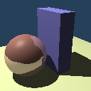
aa-off
Single ray through each pixel center: the jagged no-anti-aliasing baseline every AA mode is compared against.
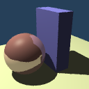
aa-jitter
Stochastic supersampling: the 2x2 AA grid offsets are jittered with the seeded RNG instead of sitting on the uniform grid.
aa-adaptive
Adaptive AA: 4 corner rays per pixel first; only pixels whose corners disagree beyond aa_threshold get the full sample grid.
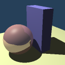
bg-escaped-rays
The class-era escape behavior: reflection rays that leave the scene return the background color instead of black (tints the mirror sphere).
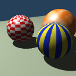
textures
Procedural textures on spheres (uv + solid noise): checkerboard, stripes, and Perlin-noise marble, plus specular over a textured surface.

aggregate-list
scene1 rewritten to use the brute-force List aggregate: every ray tests every object. Must render identically to the BVH version.
aggregate-ssub
scene1 rewritten to use the uniform spatial subdivision (SSub) grid. Must render identically to the BVH version.
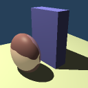
matrix-in-list
Per-object affine transforms inside the List aggregate: a sphere squashed to an ellipsoid and a block, both rotated 10 degrees about z by matrix lines. Renders byte-identically through List and BVH.

matrix-in-bvh
The same transformed scene through the BVH (which delegates transforms to its internal List). Golden is identical to matrix-in-list.
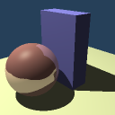
nested-bvh-transformed
A BVH nested inside a BVH, with a matrix on the inner one: scene1's two blocks live in a sub-BVH rotated 10 degrees about z as a single unit (single-instance two-level-BVH semantics). Verified to render identically when the outer aggregate is a List.